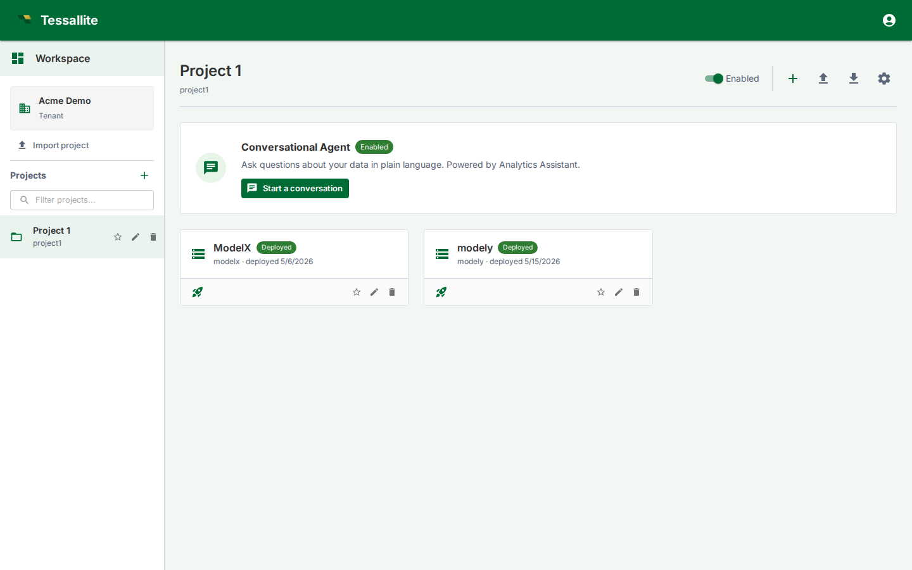

Workspace Explorer

What this covers
The Workspace Explorer is the first operational screen for tenant users. It is where you choose a project, create or import models, open the conversational agent, manage project settings, and see which models are deployed. Treat it as the project control room rather than a landing page.
What you see
The left side is the project list for the current workspace. The tenant card shows the workspace you are signed into, and the project list lets you switch between business domains. Use Import project when you have a project export bundle from another tenant or environment.
The main area shows the selected project. At the top are project-level controls: enable/disable, add model, import model, export project, agent chat, agent log, and project settings. Below that, each model appears as a card with its display name, slug, deployed state, and quick actions.
Model card states
| State | Meaning | What to do |
|---|---|---|
Deployed | A saved model version is active for JDBC, XMLA, the query router, scheduler, and optimizer. | Open it to inspect or edit; deploy again after saving a new version. |
Ready | The model has saved metadata but no active deployed version. BI tools cannot query it yet. | Open the model, validate it, then deploy. |
Invalid or warning indicators | One or more objects, schema bindings, joins, or aggregates require attention. | Open Model Builder and check Model Health, Diagnostics, or Schema Changes. |
Main actions
- Open a model to enter Model Builder.
- Deploy/undeploy from the model card when you need to publish or withdraw the latest saved version.
- Import model to bring in a JSON model bundle. Credentials are not imported; source and target connections must be rebound.
- Export project to move a whole project between tenants or environments.
- Project settings opens the drawer for agent configuration, LLM providers, users, audit settings, webhooks, and SSO mappings.
- Start a conversation opens the project agent, scoped to models enabled for the agent.
Pinning the models you use most
A project can hold many models, and the ones you actually work with are usually a handful. The star on a model card pins it: pinned models sort to the front of the list so they are the first thing you see when you open the project. Click the star again to unpin.
A pin belongs to you, not to the browser. It is stored against your user account, so the same models are pinned when you sign in from a different computer, a different browser, or after clearing your browsing data. Nobody else in the workspace sees or is affected by your pins — a colleague opening the same project sees their own.
Tip. Pinning does not change anything about the model itself. It does not deploy it, hide the others, or alter what BI tools and the agent can see. It is purely about the order the cards appear in for you.
Scenario. You are the analyst for the payments domain, in a project with twelve models. Pin payments and chargebacks. Every time you open the project — from your laptop, or from a shared machine in the office — those two cards sit at the top and you stop scrolling for them.
How to use it well
Create one project per business domain, not one project per table. A project can contain multiple one-fact models, such as payments, settlements, and chargebacks. Keep model display names business-readable because they surface in the Explorer, BI catalogues, and agent context.
Before deleting or renaming a model, check whether it is deployed and whether downstream assets reference it. Use Usage & Downstream Assets to see recorded downstream consumers and observed table usage, and Audit Log for recent administrative changes.